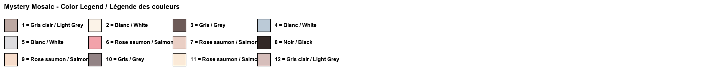
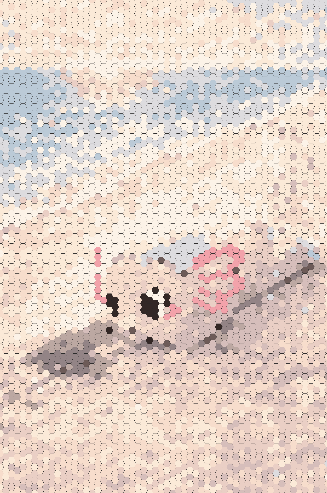

Original ImageImage originaleImagen original

Mystery Mosaic – Can you reveal the hidden image?Mosaïque mystère – Peux-tu révéler l'image cachée ?Mosaico misterioso – ¿Puedes revelar la imagen oculta?
Color LegendLégende des couleursLeyenda de colores

Answer Key (Spoiler!)Corrigé (Spoiler !)Clave de respuestas (¡Spoiler!)

Create Your Own Mystery Mosaic!Crée ta propre mosaïque mystère !¡Crea tu propio mosaico misterioso!
Upload any image and transform it into a printable mystery mosaic. Try 3 for free!Télécharge n'importe quelle image et transforme-la en mosaïque mystère imprimable. Essaie 3 gratuitement !Sube cualquier imagen y transfórmala en un mosaico misterioso imprimible. ¡Prueba 3 gratis!
🎨 Try the Mosaic Generator🎨 Essayer le Générateur🎨 Probar el GeneradorAbout This Turtle Mystery Mosaic
Dive into ocean fun with this free printable turtle mystery mosaic! This soothing color by number activity features Coco the Axolotl on a golden sunset beach, meeting an adorable baby sea turtle making its way to the waves. The mosaic coloring page uses hexagonal tiles, each marked with a number that corresponds to a color from the legend below.
Sea turtle coloring pages are beloved by children who are fascinated by marine life, and this printable color by number adds an element of discovery that keeps them engaged from start to finish. As kids fill in the numbered hexagons with the right colors, the beautiful beach scene gradually emerges. It's a calming yet exciting kids activity that combines art with the thrill of uncovering a hidden picture.
This free printable is wonderful for summer-themed activities, ocean study units, or simply a relaxing afternoon at home. Print it out as many times as you'd like and share it with classmates or friends. When your little artist is ready for their next challenge, use our mosaic generator to create a custom mystery mosaic from any photo or drawing!
À propos de cette mosaïque mystère tortue
Plongez dans l'amusement océanique avec cette mosaïque mystère tortue gratuite à imprimer ! Cette activité apaisante de coloriage par numéros met en scène Coco l'Axolotl sur une plage dorée au coucher du soleil, rencontrant un adorable bébé tortue de mer qui se dirige vers les vagues. La page de coloriage mosaïque utilise des cases hexagonales, chacune marquée d'un numéro correspondant à une couleur de la légende.
Les pages de coloriage de tortues de mer sont adorées par les enfants fascinés par la vie marine, et ce coloriage par numéros à imprimer ajoute un élément de découverte qui les garde engagés du début à la fin. Au fur et à mesure que les enfants remplissent les hexagones numérotés avec les bonnes couleurs, la belle scène de plage émerge progressivement. C'est une activité pour enfants à la fois calme et excitante.
Ce gratuit à imprimer est merveilleux pour les activités à thème estival, les études sur l'océan, ou simplement un après-midi relaxant à la maison. Imprimez-le autant de fois que vous le souhaitez ! Utilisez notre générateur de mosaïques pour créer une mosaïque mystère personnalisée à partir de n'importe quelle photo !
Sobre este mosaico misterioso de tortuga
¡Sumérgete en la diversión oceánica con este mosaico misterioso de tortuga gratuito para imprimir! Esta relajante actividad de colorear por números presenta a Coco el Axolotl en una playa dorada al atardecer, conociendo a una adorable bebé tortuga marina que se dirige hacia las olas. La página de mosaico para colorear utiliza casillas hexagonales, cada una marcada con un número que corresponde a un color de la leyenda.
Las páginas para colorear de tortugas marinas son amadas por los niños fascinados por la vida marina, y esta hoja de colorear por números para imprimir añade un elemento de descubrimiento que los mantiene interesados de principio a fin. A medida que los niños rellenan los hexágonos numerados con los colores correctos, la hermosa escena de playa emerge gradualmente. Es una actividad infantil tranquila pero emocionante que combina el arte con la emoción de descubrir una imagen oculta.
Este imprimible gratuito es maravilloso para actividades temáticas de verano, unidades de estudio sobre el océano, o simplemente una tarde relajante en casa. ¡Imprímelo tantas veces como desees! ¡Usa nuestro generador de mosaicos para crear un mosaico misterioso personalizado a partir de cualquier foto!
More Mystery MosaicsPlus de mosaïques mystèresMás mosaicos misteriosos